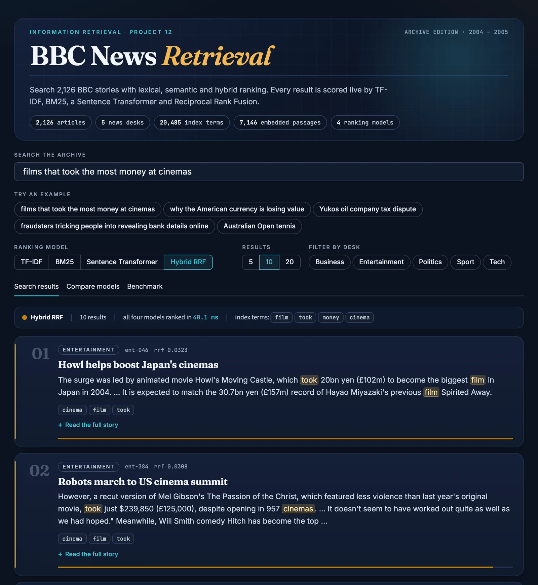
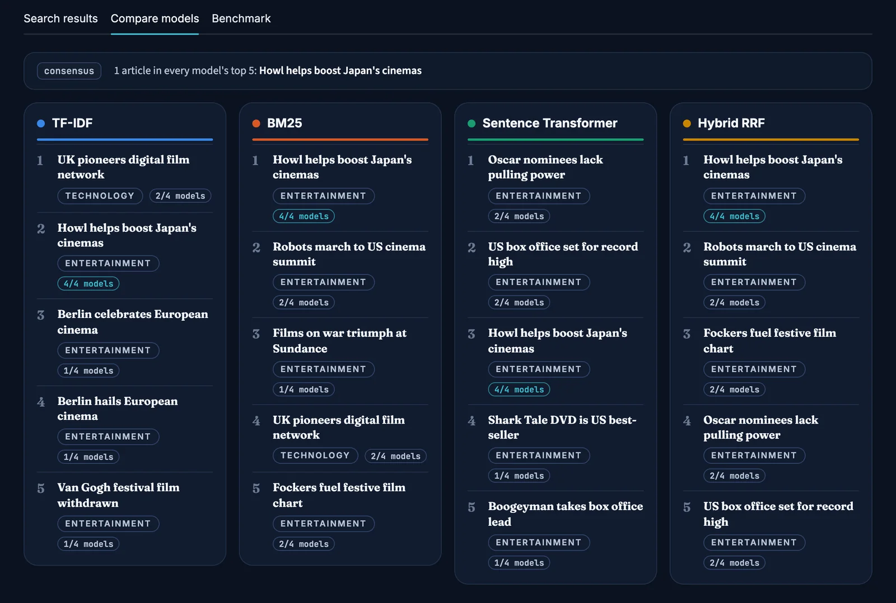
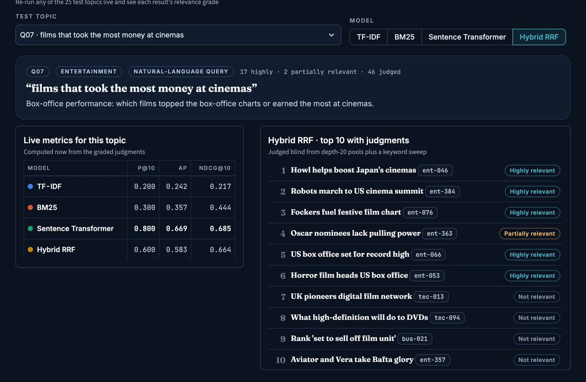
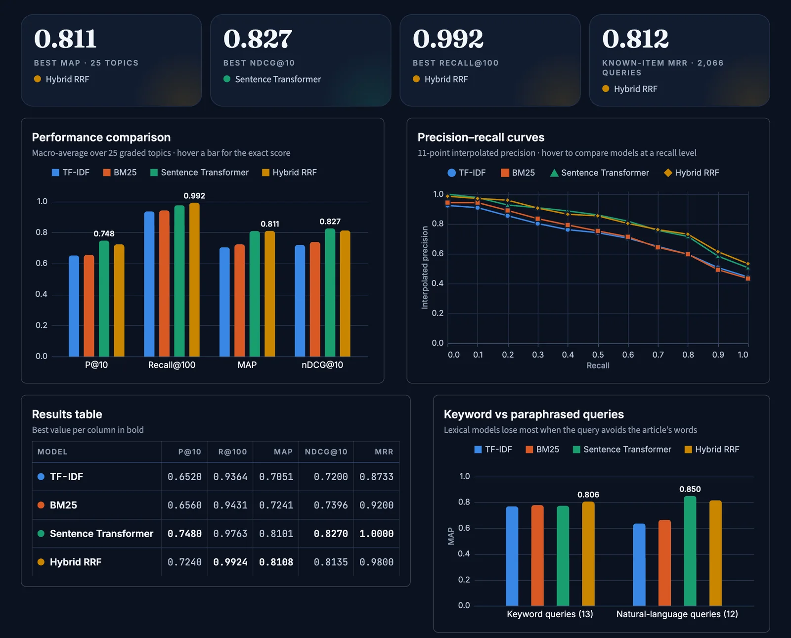
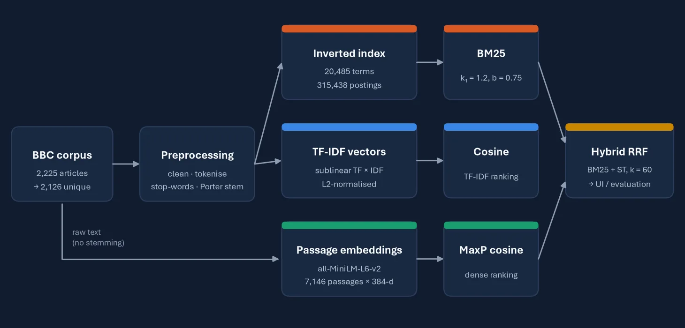

BBC News Retrieval
Lexical, semantic and hybrid search over 2,126 BBC News stories from 2004–2005. Four rankers share one inverted index, and a purpose-built, graded test collection measures which one finds the right articles.
The live app runs on Streamlit Community Cloud. If nobody has used it for a while it sleeps, and the first visit takes about a minute to wake it.

Exact words, meaning, or both
The same preprocessing pipeline (cleaning, tokenisation, stop words, Porter stemming) feeds an inverted index for the lexical models; the neural encoder reads the raw text.
TF-IDF
Vector-space model
Sublinear TF × smoothed IDF weights, L2-normalised, ranked by cosine similarity.
BM25
Probabilistic model
Okapi BM25 (k₁ = 1.2, b = 0.75) scored term-at-a-time from the inverted index.
Sentence Transformer
Dense bi-encoder
all-MiniLM-L6-v2 embeddings of 7,146 passages; an article scores as its best passage.
Hybrid RRF
Rank fusion
Reciprocal Rank Fusion of BM25 and the Sentence Transformer (k = 60) — no score calibration needed.
Fusion is the most robust ranker
Hybrid RRF ties the Sentence Transformer on topical search and beats every model on finding an article from its headline. On paraphrased queries the lexical models fall to MAP 0.665 (BM25) while the Sentence Transformer holds 0.850.
25 graded topics
Macro-average · best value per column in bold
| Model | P@10 | Recall@100 | MAP | nDCG@10 |
|---|---|---|---|---|
| TF-IDF | 0.6520 | 0.9364 | 0.7051 | 0.7200 |
| BM25 | 0.6560 | 0.9431 | 0.7241 | 0.7396 |
| Sentence Transformer | 0.7480 | 0.9763 | 0.8101 | 0.8270 |
| Hybrid RRF | 0.7240 | 0.9924 | 0.8108 | 0.8135 |
2,066 known-item queries
Find an article from its headline (headline removed from the index)
| Model | MRR | Success@1 | Recall@10 | nDCG@10 |
|---|---|---|---|---|
| TF-IDF | 0.7530 | 0.6447 | 0.9361 | 0.7956 |
| BM25 | 0.7913 | 0.6951 | 0.9506 | 0.8286 |
| Sentence Transformer | 0.7506 | 0.6389 | 0.9356 | 0.7940 |
| Hybrid RRF | 0.8122 | 0.7154 | 0.9695 | 0.8498 |
A news desk, with the evaluation built in
One-click example queries, a model selector and a desk filter; result cards with a score bar, highlighted snippet, matched terms and the full story in place.



From raw text to ranked results

A purpose-built test collection
The corpus has no official queries. Topics were written TREC-style, pooled to depth 20 over five runs and judged blind; a keyword sweep of the whole archive filled the gaps the pool missed.
Report and presentation
Three commands
The app downloads and verifies the official dataset on first start; the BBC article text is not stored in the repository.
# clone and install git clone https://github.com/akshatsharma-x/BBC-News-Retrieval.git && cd BBC-News-Retrieval python -m venv .venv && source .venv/bin/activate && pip install -r requirements.txt # launch the search app (first start: ~1 minute) streamlit run app.py